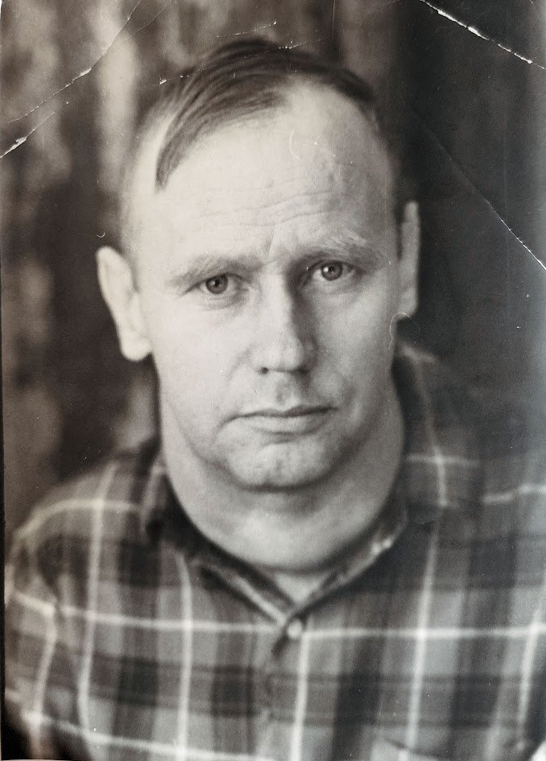

Служба в ВВС ВМФ СССР и образование
1944 г. — обучение при ВОК ВВС ВМФ в г. Моздоке, авиационный техник морской авиации (снимок 1944 г. в форме ВМФ с погонами).
После ВОВ (ок. 1945–1948 гг.) — окончание партийной школы им. В. М. Молотова в Прибалтике (семейное свидетельство).
Отцовство и брак с Зинаидой Ефимовной на 1950 г. подтверждены ЗАГС (г. Челябинск, 1950).
Стрункин Александр Васильевич
(14.11.1924)
Возраст: 101
Родился 14.11.1924 в селе Речном (по семейным данным). Второй ребёнок в
семье Василия Меркурьевича и Александры Стрункиных: старшая сестра Серафима, младшая сестра Ольга и
младший брат Анатолий. Родство с отцом Василием и дедом Меркурием подтверждено устными
свидетельствами Валентины Александровны Рыкуновой и Анатолия Васильевича Стрункина (опрос 25.10.2026). Связь Александр (1924) -
Василий (1900) - Меркурий подтверждена родовой памятью и архивным учетом потерь ЦАМО РФ. Ожидает
актовой записи ЗАГС за ноябрь 1924 г.
Отец:
Стрункин Василий Меркурьевич (28.01.1900 – 06.02.1942)
Мать:
Стрункина Александра (Около 1902 – ?)
Сестра:
Стрункина Серафима Васильевна (Около 1922)
Сестра:
Стрункина Ольга Васильевна (Около 1926)
Брат:
Стрункин Анатолий Васильевич (Март 1936)
Жена:
Тараканова Зинаида Ефимовна (14.10.1928)
14.11.1924
Родился
. Отец:
Стрункин Василий Меркурьевич (28.01.1900 – 06.02.1942)
. Мать:
Стрункина
Александра (Около 1902 – ?)
. Место:
Челябинская губ. / округ
. [1].
Около 1948
Женился
. Жена:
Тараканова Зинаида Ефимовна (14.10.1928)
.
Источники:
1.
Семейный архив и устные свидетельства семьи Стрункиных (семейные воспоминания об Игнатии
Стрункине и 6 детях, фото деда Ивана с коровами).
Тип: Книга или рукопись.